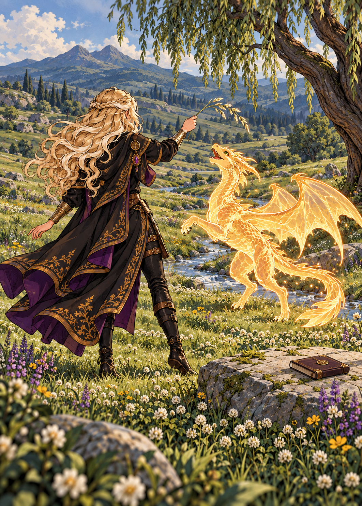
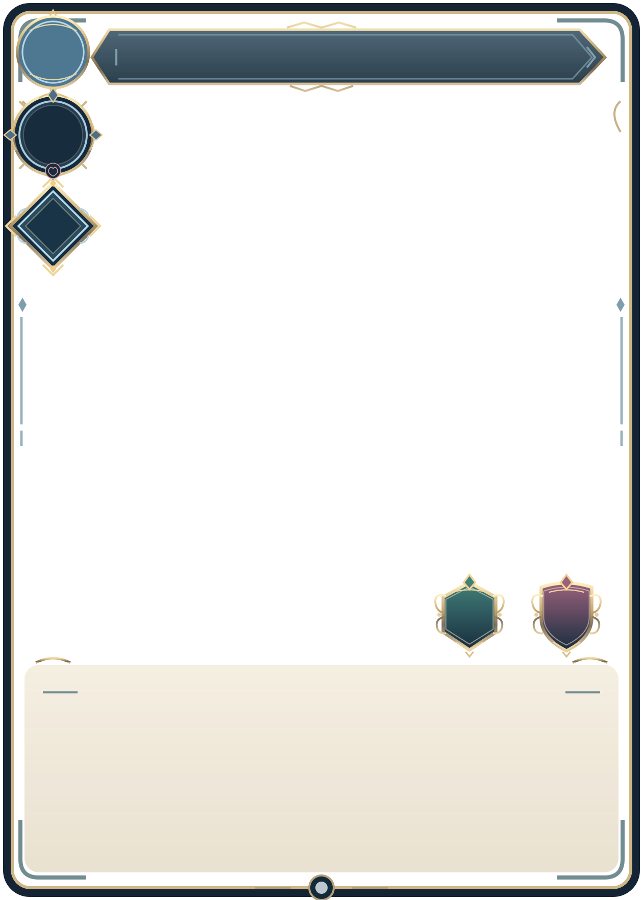
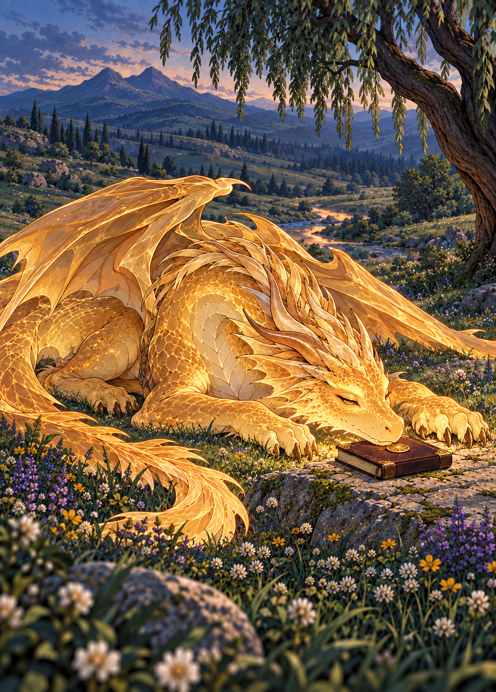

Brincadeira no Campo
—
—
—
Ciantia e Philgard adolescente
Ciantia, de costas, oferece um ramo como brinquedo. Philgard se ergue para alcançá-lo. O livro repousa sobre a pedra ao lado do riacho.
Tarde · título provisório
Duas cenas no mesmo campo: a brincadeira com Ciantia e o retorno do dragão adulto.


Ciantia, de costas, oferece um ramo como brinquedo. Philgard se ergue para alcançá-lo. O livro repousa sobre a pedra ao lado do riacho.
Tarde · título provisório

Já crescido, Philgard retorna sozinho. Ele repousa junto ao mesmo livro, com os olhos sonolentos. A árvore, o riacho e as montanhas reconhecíveis preservam o lugar.
Entardecer · nome definido pelo autor